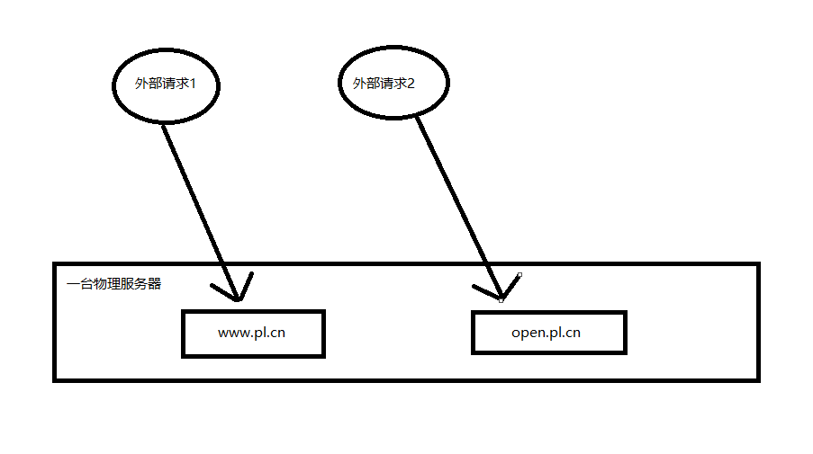
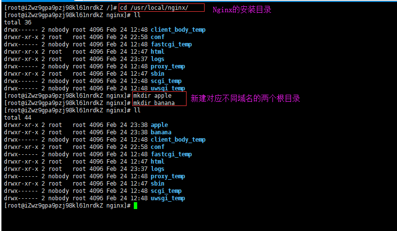
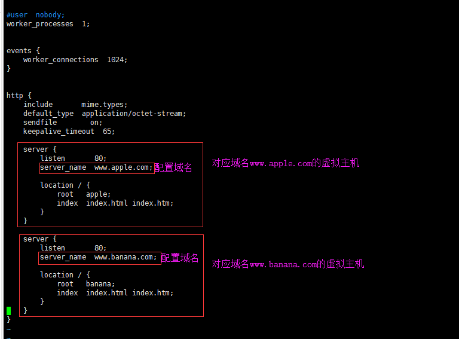

什么是虚拟主机
虚拟主机，就是把一台物理服务器划分为多个“虚拟”的服务器，每一个虚拟主机都可以由独立的域名和独立的目录

如何在Nginx中配置虚拟主机？
Nginx中的虚拟主机就是通过nginx.conf中的server节点指定的，想要设置多个虚拟主机，配置多个server节点即可
下面举个例子说明如何在Nginx中配置多个虚拟主机
假设A公司买了两个域名：www.apple.com和www.banana.com，可是A公司目前只有一台物理服务器，所以只能通过在Nginx中配置两个虚拟主机来实现不同的域名转发到不同的后台应用中
首先，在Nginx中创建两个虚拟机的根目录apple和banana并上传不同的index.html文件

然后修改nginx.conf文件如下：

最后访问不同的域名看效果：